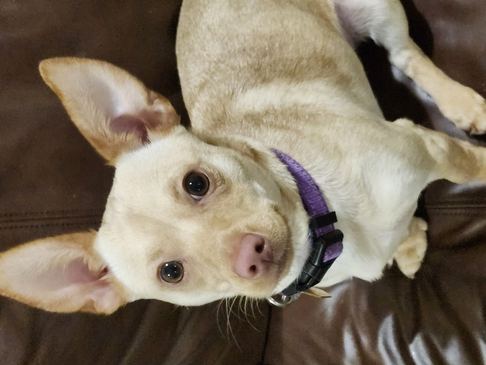
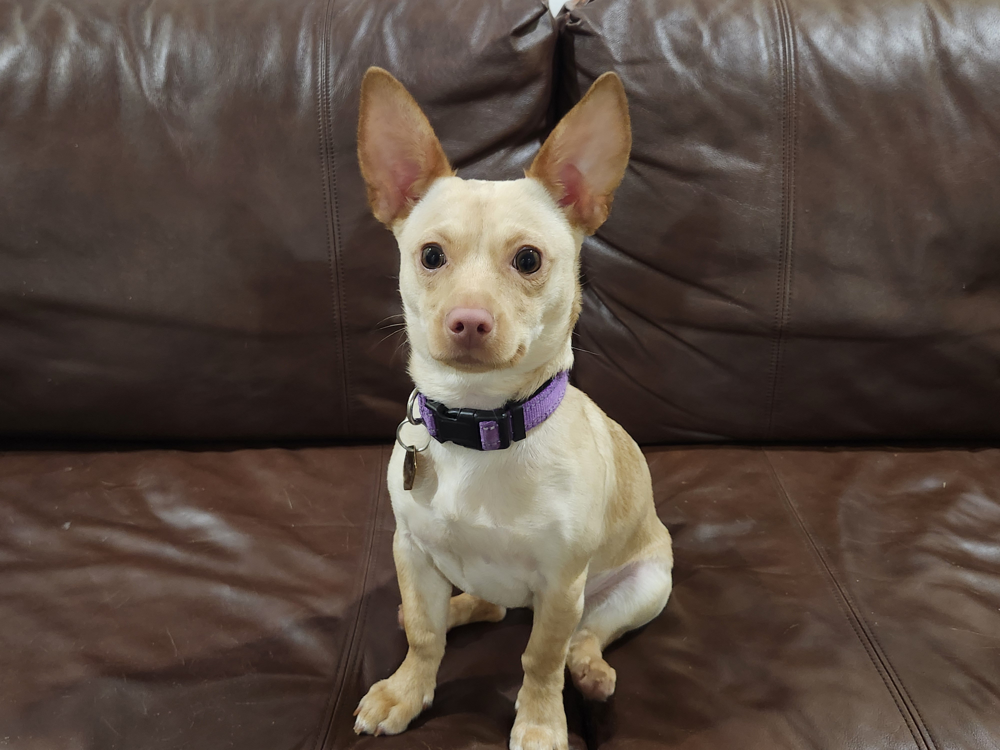
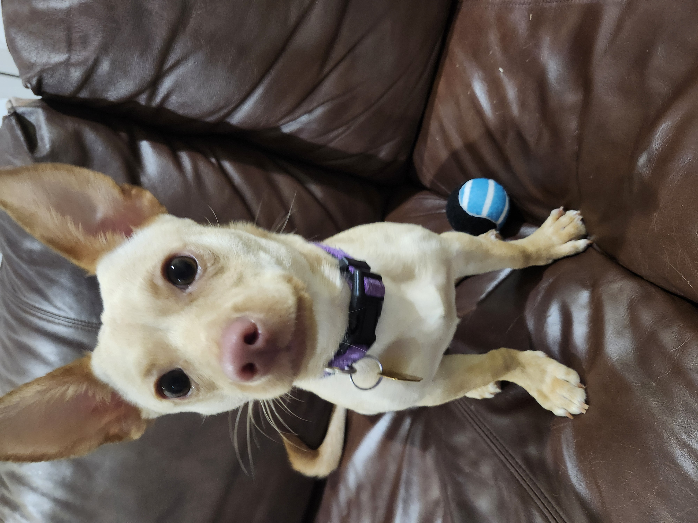
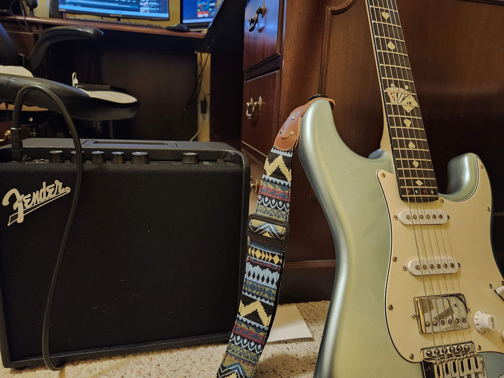
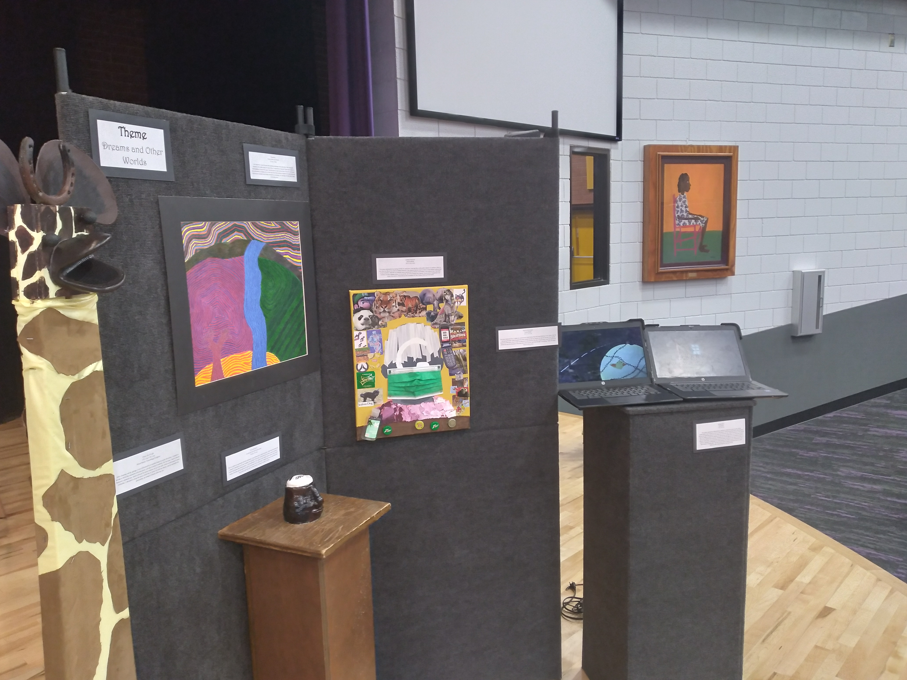
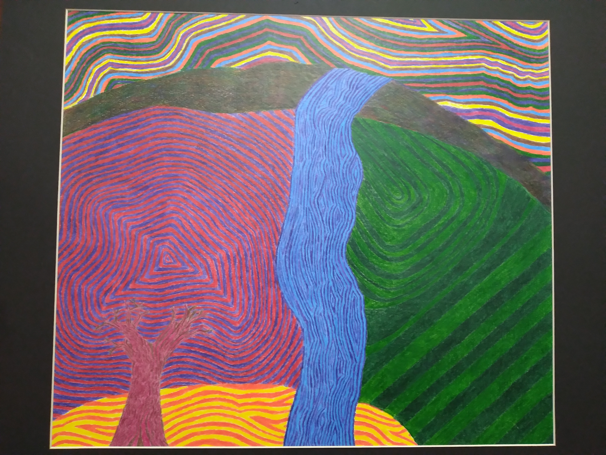

Hobbies
Swimming
Since I was young, I have been an avid swimmer. I have taken several swimming and diving classes to learn different styles and diving skills. Although I rarely have the chance to swim nowadays, I still thoroughly enjoy swimming when I have the chance.
Walking my dog
I adopted a dog in late July of 2024, and named her Nellie after another dog from a book series. She is a chigi, or a corgi chihuahua. Her favorite activities include: Tearing apart her bed, jumping, running after her ball, jumping, jumping on my legs, chasing my cats, and jumping. Also jumping.



Video Games
Some of my earliest memories include playing videogames. I have played on a plethora of different consoles, and nowadays, I use videogames to spend time with my siblings. When I was younger, I believed computers were magical with their complex parts and circuit boards, which later influenced my decision to learn programming and computer science.
Electric Guitar
Beginning in December of 2024 on a whim, I began to play the electric guitar. Because I have some experience with other musical instruments, including the trumpet, violin, and recorder, my starting process was smoother. After much practice, this then became something I love to do regularly. As of writing this (March 5th, 2025), I can play 15 full songs, which are mainly some of my favorite songs from childhood videogames.

Art
In the IB Programme at Wilson High School, I created several pieces over the course of 2 years through their art program. These pieces span from a large variety of medias, such as watercolors, animation, clay, 3-D Sculpture Collage, collage, and digital media.
Shown below is an image of my final art exhibition at the end of the two year course. While I do not remember each piece's name, I do remember some. The clay pot is named 'Personification', the giraffe is named 'Dopey' after one of my cats, the watercolor piece is 'Synesthesia', and the digital piece is called 'Road to Nowhere'. Each piece related to my chosen theme of surrealism and dreams, and were inspired by the works of several surrealist artists I studied, such as Salvador Dahli, Vladmir Kush, and Frida Kahlo.

